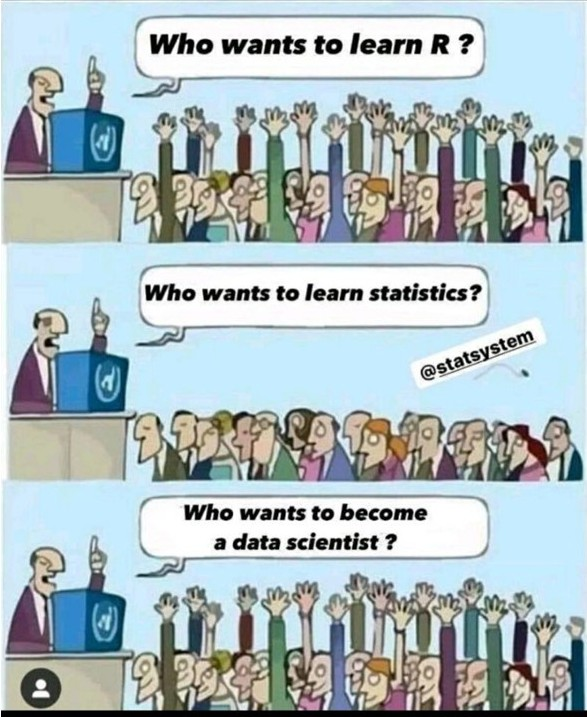
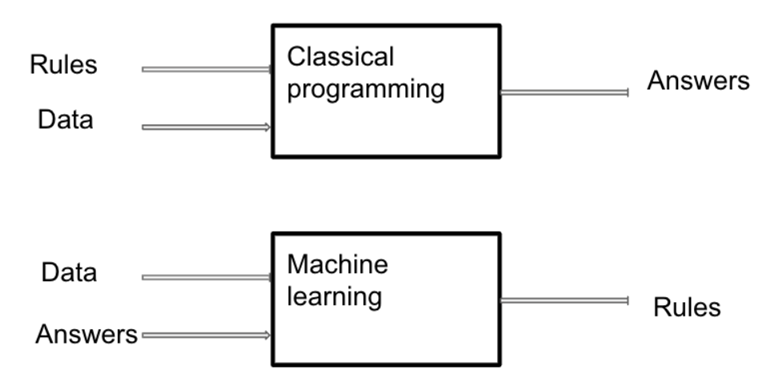

Everything you ever wanted to know about data science
but were too afraid to ask
Aug 2, 2023
What is data science?
- “A data scientist knows more about computer science than the average statistician, and more about statistics than the average computer scientist”
Drew Conway’s famous Venn diagram

Around the web…
- The difference between a statitician and a data scientist? About $30,000
- … an actual definition of data science. Taking a database and making it do something else. (warning: this quote is me! :wink:)
- Statistics done on a Mac

What are the skills of data science?
- Analysis
- ML
- Stats
- Data viz
- Software engineering
- Programming
- SQL/ data
- DevOps
- RAP
What are the skills of data science?
- Domain knowledge
- Communication
- Problem formulation
- Dashboards and reports
ML
Inevitable XKCD

Stats and data viz
- ML leans a bit more towards atheoretical prediction
- Stats leans a bit more towards inference (but they both do both)
- Data scientists may use different visualisations
- Interactive web based tools
- Dashboard based visualisers e.g. {stminsights}
Software engineering
- Programming
- No/ low code data science?
- SQL/ data
- Tend to use reproducible automated processes
- DevOps
- Plan, code, build, test, release, deploy, operate, monitor
- RAP
- I will come back to this
Domain knowledge
- Do stuff that matters
- The best minds of my generation are thinking about how to make people click ads. That sucks. Jeffrey Hammerbacher
- Convince other people that it matters
- This is the hardest part of data science
- Communicate, communicate, communicate!
- Many of you are expert at this
Reproducibility
- Reproducibility in science
- The $6B spreadsheet error
- George Osbourne’s austerity was based on a spreadsheet error
- For us, reproducibility also means we can do the same analysis 50 times in one minute
- Which is why I started down the road of data science
What is RAP
- a process in which code is used to minimise manual, undocumented steps, and a clear, properly documented process is produced in code which can reliably give the same result from the same dataset
- RAP should be:
the core working practice that must be supported by all platforms and teams; make this a core focus of NHS analyst training
Levels of RAP- Baseline
- Data produced by code in an open-source language (e.g., Python, R, SQL).
- Code is version controlled (see Git basics and using Git collaboratively guides).
- Repository includes a README.md file (or equivalent) that clearly details steps a user must follow to reproduce the code
- Code has been peer reviewed.
- Code is published in the open and linked to & from accompanying publication (if relevant).
Levels of RAP- Silver
- Code is well-documented…
- Code is well-organised following standard directory format
- Reusable functions and/or classes are used where appropriate
- Pipeline includes a testing framework
- Repository includes dependency information (e.g. requirements.txt, PipFile, environment.yml
- Data is handled and output in a Tidy data format
Levels of RAP- Gold
- Code is fully packaged
- Repository automatically runs tests etc. via CI/CD or a different integration/deployment tool e.g. GitHub Actions
- Process runs based on event-based triggers (e.g., new data in database) or on a schedule
- Changes to the RAP are clearly signposted. E.g. a changelog in the package, releases etc. (See gov.uk info on Semantic Versioning)
The data science “Unicorn”
- The maybe-mythical data science “Unicorn” has mastered:
- Domain knowledge
- Stats and ML
- Software engineering
Data science is a team sport
- In my extended DS team I have:
- Stats and DevOps (and rabble rousing) [this one is me :wink:]
- SQL, data, and training
- DevOps and programming
- Text mining, Python, and APIs
- Bilingual R/ Python, Shiny dashboards
Data science is an MMO
- Data scientists need help with:
- Stakeholder communication and engagement
- Qualitative analysis
- Translating models and prediction into the real world
- Evidence review and problem definition
Data science is an MMO
- Data scientists are an excellent help when you:
- Need a lot of pretty graphs
- Need the same analysis done 50+ times with different data
- Have too much text and not enough time to analyse it
- Want to carefully document your analysis and make it reproducible
- Have a hideously messy, large dataset that you can’t hack together yourself
The team
- We will be organising code review and pair coding sessions
- We will be running coffee and coding sessions
- We can be relied on to get very excited about thorny data problems, especially if they involve:
- Drawing pretty graphs
- NHS-R and other communities and events
- Spending long hours in a bunker writing open source code
- Processing text
- Documenting and version controlling analyses
Note
All copyrighted material is reused under Fair Dealing
view slides at the-strategy-unit.github.io/data_science/presentations